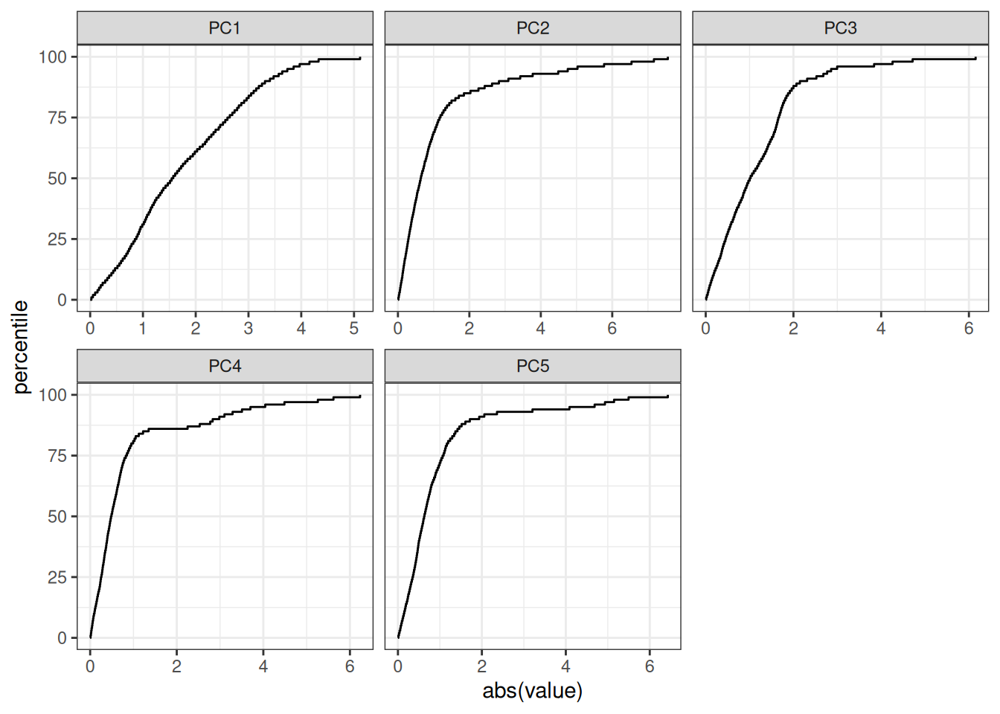
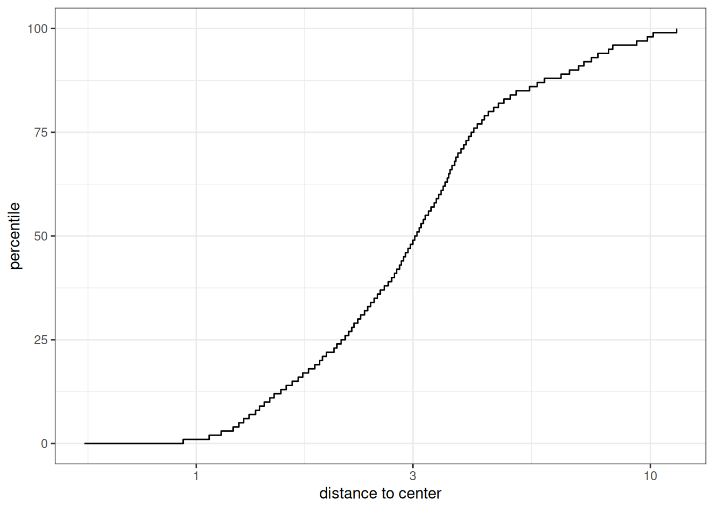
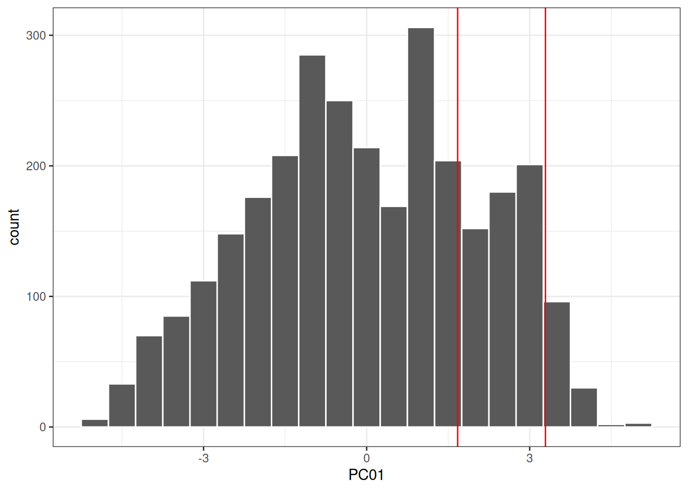
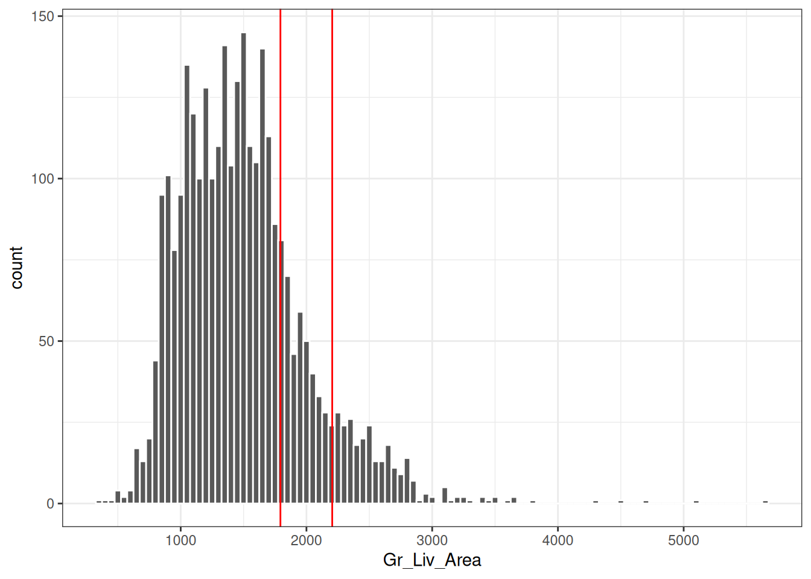

Applicability domain methods for continuous data
Source:vignettes/continuous-data.Rmd
continuous-data.RmdIntroduction
library(applicable)
applicable provides the following methods to analyze the applicability domain of your model:
- Principal component analysis
- Hat values statistics
Example
We will use the Ames IA housing data for our example.
There are 2,930 properties in the data.
The Sale Price was recorded along with 81 predictors, including:
- Location (e.g. neighborhood) and lot information.
- House components (garage, fireplace, pool, porch, etc.).
- General assessments such as overall quality and condition.
- Number of bedrooms, baths, and so on.
More details can be found in De Cock (2011, Journal of Statistics Education).
The raw data are at http://bit.ly/2whgsQM but we will use a processed version found in the AmesHousing package. applicable also contains an update for these data for three new properties (although fewer fields were collected on these).
To pre-process the training set, we will use the recipes package. We first tell the recipes that there is an additional value for the neighborhood in these data, then direct it to create dummy variables for all categorical predictors. In cases where there are no levels observed for a factor, we eliminate predictors with a single unique value, then estimate a transformation that will make the predictor distributions more symmetric. After these, the data are centered and scaled. These same transformations will be applied to the new data points using the statistics estimated from the training set.
library(recipes) #> Warning: package 'recipes' was built under R version 3.6.2 library(dplyr) ames_cols <- names(ames_new) training_data <- ames %>% # For consistency, only analyze the data on new properties dplyr::select(one_of(ames_cols)) %>% mutate( # There is a new neighborhood in ames_new Neighborhood = as.character(Neighborhood), Neighborhood = factor(Neighborhood, levels = levels(ames_new$Neighborhood)) ) training_recipe <- recipe( ~ ., data = training_data) %>% step_dummy(all_nominal()) %>% # Remove variables that have the same value for every data point. step_zv(all_predictors()) %>% # Transform variables to be distributed as Gaussian-like as possible. step_YeoJohnson(all_numeric()) %>% # Normalize numeric data to have a mean of zero and # standard deviation of one. step_normalize(all_numeric())
Principal Component Analysis
The following functions in applicable are used for principal component analysis:
-
apd_pca: computes the principal components that account for up to either 95% or the providedthresholdof variability. It also computes the percentiles of the principal components and the mean of each principal component. -
autoplot: plots the distribution function for pcas. You can also provide an optional set ofdplyrselectors, such asdplyr::matches()ordplyr::starts_with(), for selecting which variables should be shown in the plot. -
score: calculates the principal components of the new data and their percentiles as compared to the training data. The number of principal components computed depends on thethresholdgiven at fit time. It also computes the multivariate distance between each principal component and its mean.
Let us apply apd_pca modeling function to our data:
ames_pca <- apd_pca(training_recipe, training_data) ames_pca #> # Predictors: #> 50 #> # Principal Components: #> 118 components were needed #> to capture at least 95% of the #> total variation in the predictors.
Since no threshold was provided, the function computed the number of principal components that accounted for at most 95% of the total variance.
For illustration, setting threshold = 0.25 or 25%, we now need only 10 principal components:
ames_pca <- apd_pca(training_recipe, training_data, threshold = 0.25) ames_pca #> # Predictors: #> 50 #> # Principal Components: #> 10 components were needed #> to capture at least 25% of the #> total variation in the predictors.
Plotting the distribution function for the PCA scores is also helpful:

You can use regular expressions to plot a smaller subset of the pca statistics:

The score function compares the training data to new samples. Let’s go back to the case where we capture 95% of the variation in the predictors and score the new samples. Since we used the recipe interface, we can give the score function the original data:
ames_pca <- apd_pca(training_recipe, training_data) pca_score <- score(ames_pca, ames_new) pca_score %>% select(matches("PC00[1-3]"), contains("distance")) #> # A tibble: 3 x 8 #> PC001 PC002 PC003 PC001_pctl PC002_pctl PC003_pctl distance distance_pctl #> <dbl> <dbl> <dbl> <dbl> <dbl> <dbl> <dbl> <dbl> #> 1 -4.86 0.870 -0.457 87.0 17.7 26.1 6.33 1.85 #> 2 -2.85 0.913 0.360 51.7 19.0 21.0 7.64 17.9 #> 3 -4.63 0.572 -1.21 84.8 11.7 56.5 7.58 17.1
Notice how the samples, displayed in red, are fairly dissimilar to the training set in the first component:

What is driving the first component? We can look at which predictors have the largest values in the rotation matrix (i.e. the values that define the linear combinations in the PC scores). The top five are:
# `ames_pca$pcs` is the output of `prcomp()` comp_one <- ames_pca$pcs$rotation[, 1] comp_one[order(abs(comp_one), decreasing = TRUE)] %>% head(5) #> Year_Built Garage_Cars Foundation_PConc Year_Remod_Add Garage_Area #> -0.2537606 -0.2176448 -0.2100323 -0.2050218 -0.2019180
These three houses are extreme in the most influential variable (year built) since they were new homes. The also tend to have fairly large garages:

This may be what is driving the first component.
However, the overall distance values are relatively small, which indicates that, overall, these new houses are not outside the mainstream of the data.
Hat Values
The Hat or leverage values are based on the numerics of linear regression. The measure the distance of a data point to the center of the training set distribution. For example, if the numeric training set matrix was \(X_{n \times p}\), the hat matrix for the training set would be computed using
\[H = X'(X'X)^{-1}X\]
The corresponding hat values for the training would be the diagonals of \(H\). These values can be computed using stats::hatvalues(lm_model) but only for an lm model object. Also, it cannot compute the values for new samples.
Suppose that we had a new, unknown sample (as a \(p \times 1\) data vector \(u\)). The hat value for this sample would be
\[h = u^\intercal(X^\intercal X)^{-1}u\].
The following functions in applicable are used to compute the hat values of your model:
-
apd_hat_values: computes the matrix \((X^\intercal X)^{-1}\). -
score: calculates the hat values of new samples and their percentiles.
Two caveats for using the hat values:
The numerical methods are less tolerant than PCA. For example, extremely correlated predictors will degrade the ability of the hat values to be effectively used. Also, since an inverse is used, there cannot be an linear dependencies within \(X\). To resolve this the former example, the recipe step
recipes::step_corr()can be used to reduce correlation. For the latter issue,recipes::step_lincomp()will identify and remove linear dependencies in the data (as shown below).When using a linear or logistic model, the model adds an intercept columns of ones to \(X\). For equivalent computations, you should add a vector or ones to the data or use
recipes::step_intercept().
Let us apply apd_hat_values modeling function to our data (while ensuring that there are no linear dependencies):
non_singular_recipe <- training_recipe %>% step_lincomb(all_predictors()) # Recipe interface ames_hat <- apd_hat_values(non_singular_recipe, training_data)